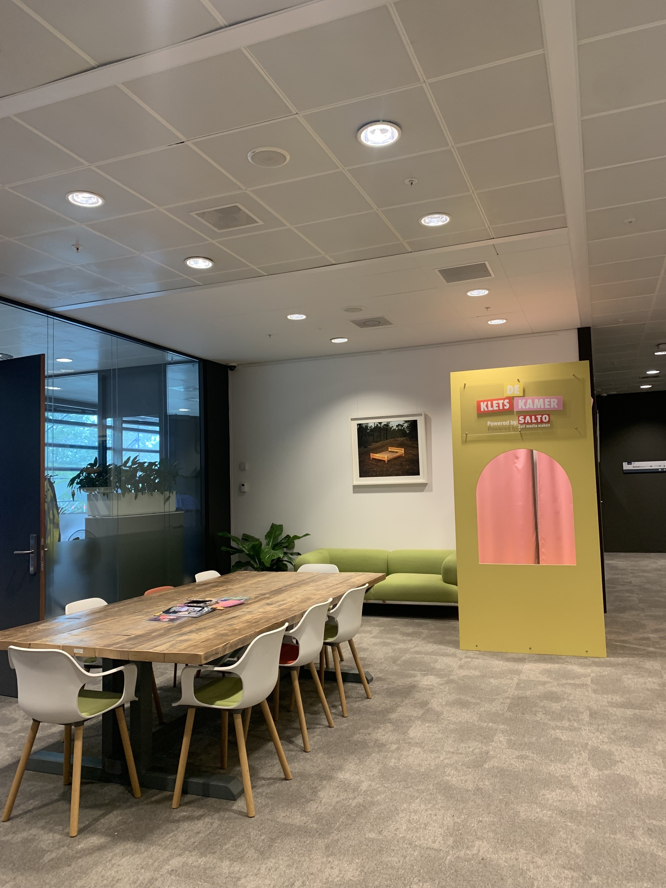
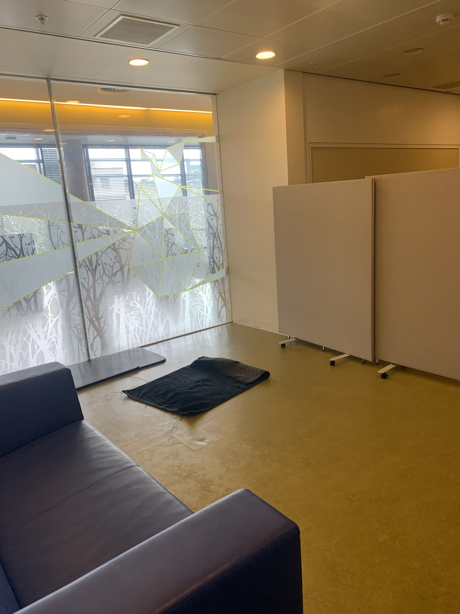
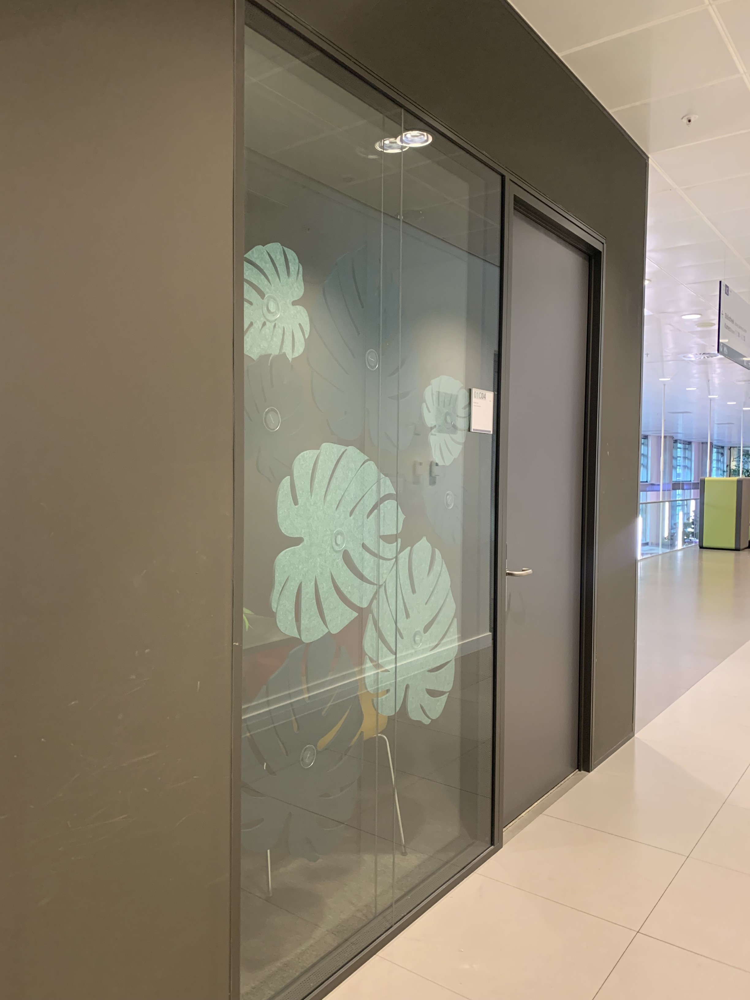

Amstelcampus
-

Bar cafe KO
De barista's van cafe KO maken hier dagelijks verse en lekkere koffie achter de bar. Je hebt de keuze uit verschillende dranken en smaakjes.
-

Studeerplek voor groepen
Dit is een handige plek als voor groepsopdrachten. Een aparte tafel voor groepen studenten. Plaats: Wibauthuis 1e etage
-

Studieplek cafe KO
Cafe KO heeft zelf studieplekken om de hoek!
-

Jacoba Mullerhuis
Dagelijks lopen wij vanuit het prachtige Jacoba Mullerhuis naar het Theo Thijssenhuis. Feitje: Het duurt 5 minuten voordat de rolstoellift omhoog is bij de ingang.
-

Gebedsruimte Wibauthuis
Een handige gebedsruimte in het Wibauthuis
-

Stilteruimte
Een handige ruimte om te reserveren via de HvA website.